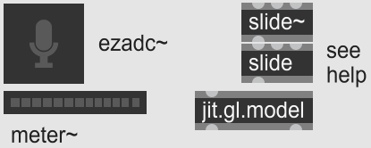

Control
Mapping and directing data and signal flows to control different outputs.
Lists . MSP basics . Args, messages, attributes . Example
Lists
Once you get used to ints and floats in Max, sooner or later you will need to combine them (and other symbols) into lists. As usual, a good place to get started is the internal tutorial.
Two elements are key here: building lists with [pack] and [pak], and defining lists as messages with replaceable arguments ($1, $2 etc).
Setting a value without triggering further output.
A basic use case would be sending a set message to an object. Many object accept such messages, usually for setting an internal state without passing it on downstream. Try recreating the right-hand patch, first without the set $1 message, and see what happens. You can replace the bottom [number] with e.g. a [message], and get the same effect: the [button] remains untriggered.
Another way to create a set message is via the [prepend] object. With the “set” argument ([prepend set]) you tell the object to reproduce whatever message it receives, preceded by “set”. And we’ve already used the [pak] object to make a list-message—in this case you might use [pak set 0].This is my least favourite way to make lists, mainly because it’s so easy to mess up the [pak] inlets. As usual with Max, you have different methods for almost the same outcome,e.g. [prepend] carries any incoming message, while set $1 specifies that a single symbol (thru $1) will be passed on. so deciding on which one to use is often a matter of personal style.
Dig through the documentation via the See Also section.
If you’ve mastered the above, the next step would be to look at [zl] (for most common list operations. My fave is [zl stream]) and [coll] (for storing collections of values, including lists, in memory). As always, start with the help patches, and move on to the “See Also” section of the reference tab for related objects and tutorials.
MSP basics
With signals you don’t have to worry about order precedence or lists,(although there is the multichannel ([mc.~]) signal type, which we will leave for later) so in some ways they’re easier to grasp. MSP signals flow continuously, and at any point you can tap into them with something like [number~], [meter~], [scope~], or [spectroscope~], to see if they’re behaving as expected.
To get a signal in the first place, you need a source: a constant[number~] – click on its small wave icon to turn it into an arrow, which converts the object from a monitor into a generator. , an oscillator[cycle~], [saw~] etc. , a buffer[buffer~] played with [play~], [groove~] etc. , an analog input[adc~] or [ezadc~] , or randomness[noise~] etc. – all of them can be used to generate signals. But you probably won’t want to audition them straight[dac~] or [ezdac~] : some of them might act as audio sources (e.g. [cycle~ 440], a 440Hz tone), while others can be control signals (e.g. [cycle~ 1], a sine that repeats just once per second).
The quickest way to get a sound file into Max is by dragging one from the left-hand Audio panel (or anywhere on your computer) into the unlocked patch, which produces a [playlist~] object. This object is very powerful and easy to use, which is why we’ll save it for later!
Looping through a sound file loaded into a [buffer~].
To better understand how Max deals with audio material, create a [buffer~ mySound] object, drag a soundfile onto it (or send it the read message), then double-click it to check that your sound was loaded. Then use the [groove~] and [ezdac~] objects as seen on the right.
You should now hear your sound running in a loop. Again, check out the help patches to understand how it all works and get a feel for what you can change.
Args, messages, attributes
Let’s take another look at the [groove~ mySound @loop 1] object. We have the object name, then an argument that ties it to the desired buffer, then @what?
“@loop” is an attribute which, much like the object’s argument(s), sets its internal behaviour. The difference is that args are unnamed and ordered (here the first arg has to be a buffer name), while attributes are @named and can be called in any order, if at all.
There are several ways to see and change an object’s attributes:
Directly in the object box. As you’re creating it, the autocomplete menu shows a list of possible arguments and attributes. As we’ve seen, attributes appear as “@name value”.
Using the inspector (Ctrl+I).
Right-clicking on the first inlet. This pops up a menu of all attributes and all possible messages into the object. Selecting an attribute produces an [attrui], an interface allowing you to change its value.
Messages. Of course, good old-fashioned messages also allow you to change the value directly. In our case, we might send loop 1. Or, if we want to change the setting dynamically from elsewhere in the patch: loop $1.
Example

Components for controlling a 3D model with audio.
You can now get around well enough to implement a spectacular audio-reactive 3D visualisation. Try to use the objects below (or replace the [ezadc~] with the buffer-groove system above) and make an object’s scale react to your sound’s amplitude.
Tip: start by copy-pasting the [jit.gl.model] help patch. Check that object’s args to find out which controls the scaling.
Q: Why might the [slide(~)] objects prove useful? Find out more here. When would you use [slide], and when [slide~]?